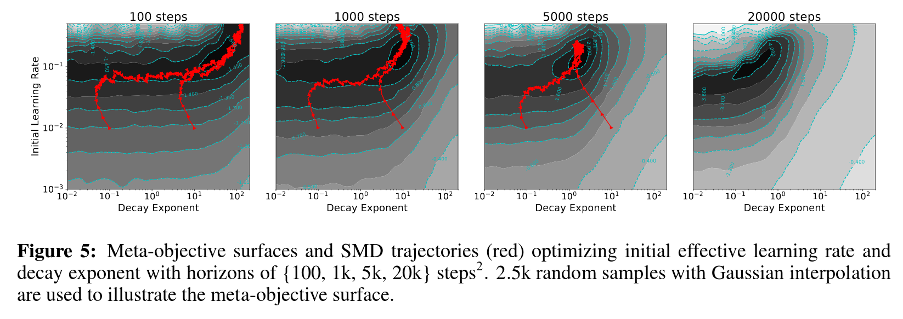

Yuhuai Wu*, Mengye Ren*, Renjie Liao, Roger B. Grosse
Department of Computer Science, University of Toronto, Toronto ON, CANADA
Vector Institute for Artificial Intelligence, Toronto ON, CANADA
*Equal contribution

Careful tuning of the learning rate, or even schedules thereof, can be crucial to effective neural net training. There has been much recent interest in gradient-based meta-optimization, where one tunes hyperparameters, or even learns an optimizer, in order to minimize the expected loss when the training procedure is unrolled. But because the training procedure must be unrolled thousands of times, the meta-objective must be defined with an orders-of-magnitude shorter time horizon than is typical for neural net training. We show that such short-horizon meta-objectives cause a serious bias towards small step sizes, an effect we term short-horizon bias. We introduce a toy problem, a noisy quadratic cost function, on which we analyze short-horizon bias by deriving and comparing the optimal schedules for short and long time horizons. We then run meta-optimization experiments (both offline and online) on standard benchmark datasets, showing that meta-optimization chooses too small a learning rate by multiple orders of magnitude, even when run with a moderately long time horizon (100 steps) typical of work in the area. We believe short-horizon bias is a fundamental problem that needs to be addressed if meta- optimization is to scale to practical neural net training regimes.
[pdf]
[link]
@inproceeding{wu18shorthorizon,
author = {Yuhuai Wu and
Mengye Ren and
Renjie Liao and
Roger B. Grosse},
title = {Understanding Short-Horizon Bias in Stochastic Meta-Optimization},
booktitle= {Proceedings of 6th International Conference on Learning
Representations {ICLR}},
year = {2018},
}